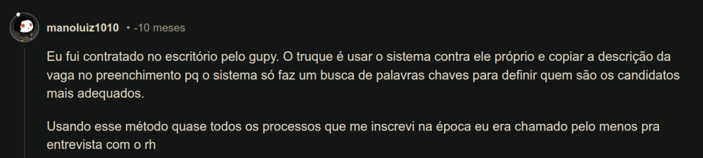

Tecnologia e Classe de 13/06/24
PL das IAs

PL das Brusinhas/Shein/Taxação
Sobre a responsabilidade fiscal
Retirado de Medo e Delírio em Brasília 22 a 24/05/24: https://open.spotify.com/episode/4nSuF0s8nuqE6rVikj0C2s?si=2d0e9dfc30be497f
- A PLOA de 2022 do governo Bolsonaro previa um déficit de 63 bilhões, e não previa os gastos com Bolsa Família (algo em torno de 60 biilhões) e o valor da previdência estava subestimado
- Também não incluia o pagamento dos Precatórios de 2022 e de 2023 criando uma nova despesa de 90 bilhões
- Esse gasto todo foi empurrado pra frente e acontece num ano eleitoral onde foram criados diversos auxílios para classes que apoiam o Bolsonarismo
- Isso acabou na PEC da Transição que cubriu esse rombo
- A taxação dos produtos estilo Shein são um desejo do nosso varejo e passou com o apoio de CENTRÃO
- Dada a situação das contas e o desejo do Haddad de manter o seu Arcabouço Fiscal não existe muito caminho além do corte de gastos e o aumento de algum imposto
https://istoe.com.br/taxacao-das-blusinhas-e-aprovada-em-votacao-simbolica-no-senado/
Gupy

https://tecnoblog.net/especiais/processo-seletivo-longo-e-feedbacks-rasos-o-que-acontece-com-a-gupy/
https://www.baguete.com.br/noticias/19/05/2022/chutes-enganam-a-ia-do-gupy
IKEA virtual
https://www.instagram.com/p/C7zD_38u4gW/
Wallmart: https://chainstoreage.com/walmart-makes-roblox-history-real-world-sales